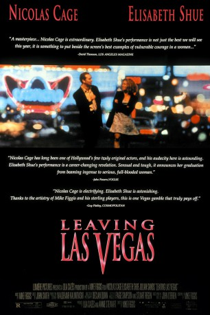

#2405 Leaving Las Vegas - Liebe bis in den Tod
Alternativ: Leaving Las Vegas
Auszeichnungen: 1 Oscars gewonnen für 3 Oscars nominiert 1 GoldenGlobes gewonnen
 
 IMDB-Wertung: 7.5 / 10
IMDB-Wertung: 7.5 / 10  Metascore: 82
Metascore: 82 
Ben Sanderson ist am Ende. Von seiner Frau verlassen fängt der Drehbuchautor an, unkontrolliert zu trinken. Schließlich kratzt er sein letztes Geld zusammen und fährt nach Las Vegas. Sein Ziel: Soviel zu trinken, bis er stirbt. In der Wüstenstadt verliebt er sich allmählich in die Prostituierte Sera und zieht bei ihr ein. Aus der anfänglichen Freundschaft zwischen den beiden Außenseitern erwächst allmählich Liebe, die jedoch auf brutale Belastungsproben gestellt wird.
Jahr: 1995
Dauer: 111 Minuten
FSK: 16
Land: USA Studio: MGM/UA Distribution Co.Tonspuren:
Untertitel:
Auflösung: 1080p (1920x1080) Größe: 9308 MB
Genre: Drama, Liebe
Regisseur:  Mike Figgis
Mike Figgis
Drehbuch: John O'Brien, Mike Figgis
Soundtrack: Mike Figgis
Darsteller:
Datei: X:\1995\Leaving Las Vegas - Liebe bis in den Tod (1995, FSK16, 1920x1080).mkv seit 05.11.2015
Festplatte: HD 1992-1995
 Es gibt insgesamt 85 Filme in der Gruppe '1995'
Es gibt insgesamt 85 Filme in der Gruppe '1995'